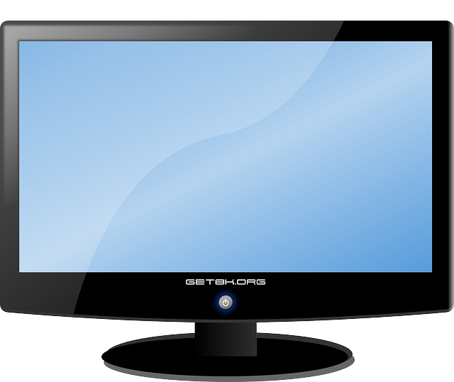

Criterios
- Debe añadir las etiquetas correspondientes para que sea una web accesible.
- Elija las etiquetas que permitan dar formato al documento.
- Mapee una imagen creando varias zonas activas.
- Elija las marcas que presente la información en forma de listas y de tablas.
- Inserte etiquetas que enlacen con otros documentos y direcciones web.
- Inserte marcas para presentar imágenes, sonidos y vídeos.
- Especifique las etiquetas para crear marcos y relacione varias páginas.
- Inserte las marcas que permitan la ejecución de programas.
- Cree capas para presentar información en distintas zonas de la página.
- Identifique varios navegadores y pruebe la funcionalidad de la página.
- Aplique criterios de “accesividad” y “usabilidad”.
- Documente la página realizada.
Tabla con los datos de los resultados de la búsqueda
| Imagen | Datos |
|---|---|
Portátil - 3 GHz - 4 GB RAMComprar: |
|
 |
Videocámara - Alta definición 1080p - 60 GBComprar: |
|  |
Televisor - 46" - Full HDComprar: |
 |
Móvil - 3G - Wi-Fi - 8 GBComprar: |
| Total de artículos: | |
Mapas de imagen
Mapa de imagen con HTML
Mapa de imagen con SVG
Enlace a otro documento
Audio y Vídeo
Etiquetas para crear marcos
En html5 hay una etiqueta para crear marcos: la etiqueta <iframe>
Ejemplo de <iframe>:
En html4 existían las etiquetas <frameset> y <frame>
Ejemplo de <frameset>:
Marcas que permiten la ejecución de programas
En html5 la única ejecución que se permite es la de JavaScript
Se utiliza la etiqueta <script>
Se puede usar de dos maneras:
- Código embebido en la página:
<script> /* Código JavaScript */ </script> - Código en otro archivo:
<script src="myscripts.js"></script>
Se puede ejecutar un texto/página alternativa si el navegador no soporta JavaScript:
<noscript>¡Tu navegador no soporta JavaScript!</noscript>
Todos los navegadores modernos soportan JavaScript.
Los navegadores que no lo soporten (como por ejemplo los de
texto) interpretarán correctamente la página si se usan
correctamente las etiquetas de html5 y no se abusa del
JavaScript (me refiero a añadir el contenido con el,
AJAX aparte)
Ejemplo de ejecución de JavaScript.
Al pulsar el siguiente botón se cambia el color del botón.
En html5 no se permite la ejecución de otros lenguajes:
Warning !
Most browsers no longer support Java Applets and Plug-ins.
ActiveX controls are no longer supported in any browser.
The support for Shockwave Flash has also been turned off in modern browsers.